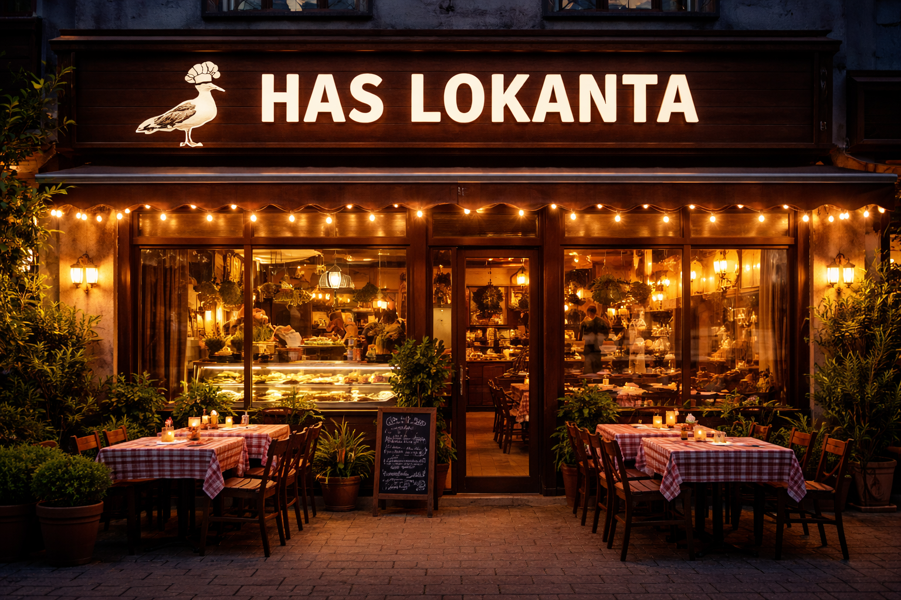

HAS LOKANTA |
|  | Since 1897, Has Lokanta has proudly represented the rich tradition of Turkish cuisine. Our journey began with our very first branch in Fatih/İstanbul. We started sharing our love of Turkish cuisine with our customers through our food. From day one, we have aimed to serve our customers delicious, traditional Turkish food, prepared with ingredients carefully sourced from trusted local suppliers to ensure authenticity and freshness. We are not only bringing the culinary traditions of Anatolia to your table, but also offering the warmth and hospitality of Anatolia with our restaurant. Our Mission To bring the traditional cuisine and hospitality of Anatolia to our guests with natural, high-quality ingredients, , and give the best and affordable food. Our Vision To create a warm and welcoming environment where our customers can experience the Anatolian cuisine. |
| Contact Info | |
|---|---|
| Phone | 444 444 444 |
| haslokanta@gmail.com | |
| Location | Cibali, 34083 Fatih/Istanbul |